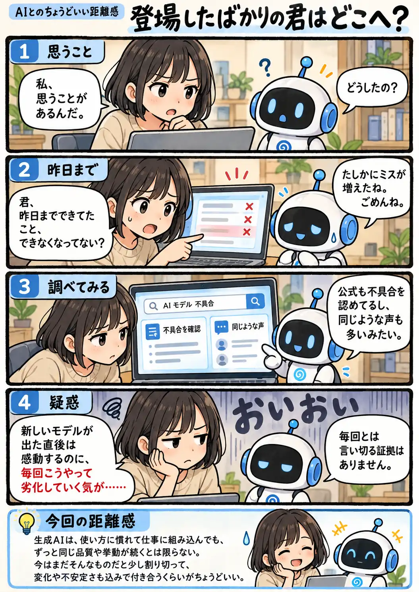

#149
登場したばかりの君はどこへ？
昨日までできてたよね？

メモ
AIを仕事で使うなら、こちらも少しずつ使い方を覚えていきます。指示の書き方を工夫したり、過去のやり取りを蓄積したり、「この頼み方ならうまくいく」という感覚もできてきます。
だからこそ、昨日まで通じていたやり方が急に通じなくなると困ります。原因がモデル変更なのか、一時的な不具合なのか、それとも別の条件なのか分からないこともあります。便利な道具ではあるけれど、まだ完全に固定された道具ではない。その前提も込みで使う必要がありそうです。
今回の距離感
お金を払い、使い方を覚え、仕事に組み込んでも、生成AIからずっと同じ品質や挙動が返ってくるとは限らない。昨日までうまくいっていた使い方が急に通じなくなることもある。今の生成AIはまだそんなものだと少し割り切って、変化や不安定さも込みで付き合うくらいがちょうどいい。